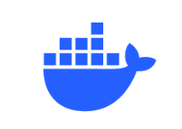
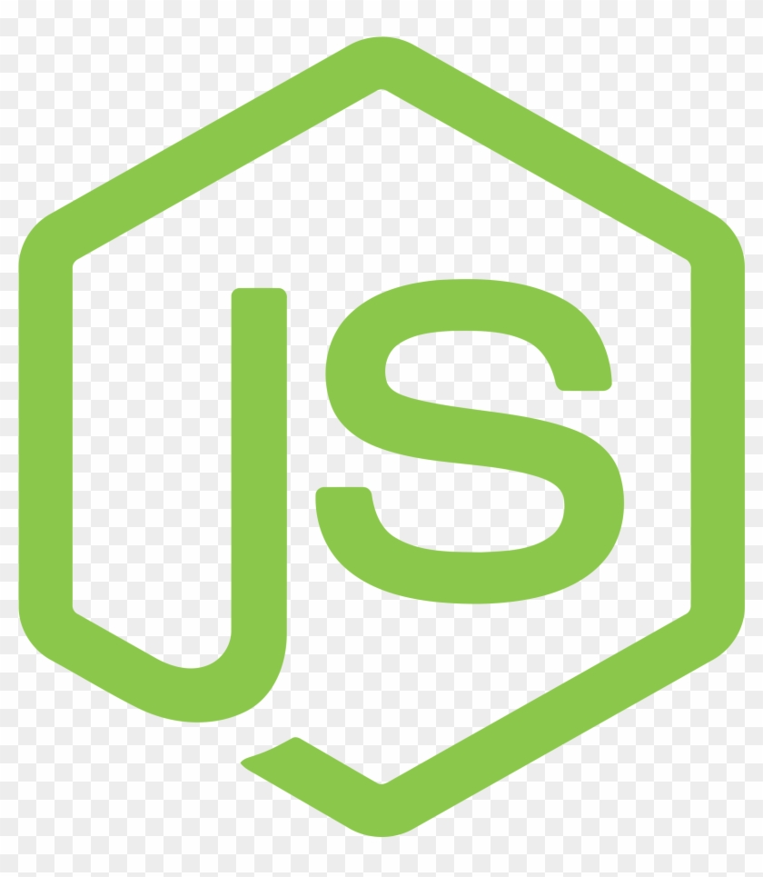
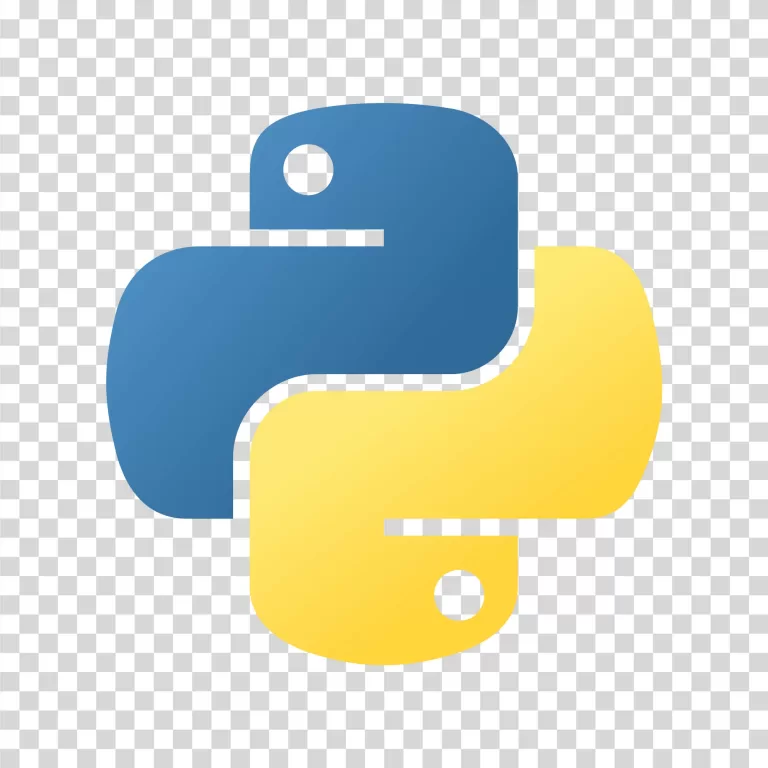

Lucas Cobra
Desenvolvedor &
Profissional com 14 anos de sólida experiência técnica em infraestrutura de TI e suporte especializado, atualmente consolidando a transição de carreira para a Engenharia de Software por meio do tecnólogo em Desenvolvimento de Sistemas Multiplataforma na FATEC. Alinho uma base robusta de sistemas operacionais, redes e design visual com o desenvolvimento de soluções modernas de software de alto impacto.
🎯 Objetivo & Áreas de Interesse: Atuar no mercado como Desenvolvedor Júnior (Full-Stack / Backend), com foco no domínio do ecossistema JavaScript/TypeScript (React, Node.js), arquiteturas em nuvem, microsserviços com Docker e soluções baseadas em Visão Computacional com Python.
Persistente, Curioso e Organizado
Com um pé na infraestrutura de TI e outro no design, sou movido pela resolução de problemas...
Projetos
Selecionados


Habilidades em
Destaque

Figma
Protótipo

HTML5
Web Designer

UX Research
Experiência do Usuário

Adobe Creative Suite
Designer Gráfico

CSS3
Web Designer

JavaScript
Linguagem de Programação

SQL
Banco de Dados

Linux
Servidores

Windows Server
Servidores

UML
Diagramação Estrutural

Scrum
Metodologia Ágil

Docker
DevOps & Infraestrutura

TypeScript
Linguagem de Programação

Node.js / Express
Desenvolvimento Backend

Python / OpenCV
IA & Visão Computacional
Experiência
-
Tecnólogo em Desenvolvimento de Sistemas MultiplataformaFATEC (2025 – Atual)
-
Analista de Suporte Nível 3Sonda (2019 – Atual)
-
Tecnólogo em Designer GráficoUnip (2014)
-
Help Desk Nível 2Tivit (2010 – 2018)